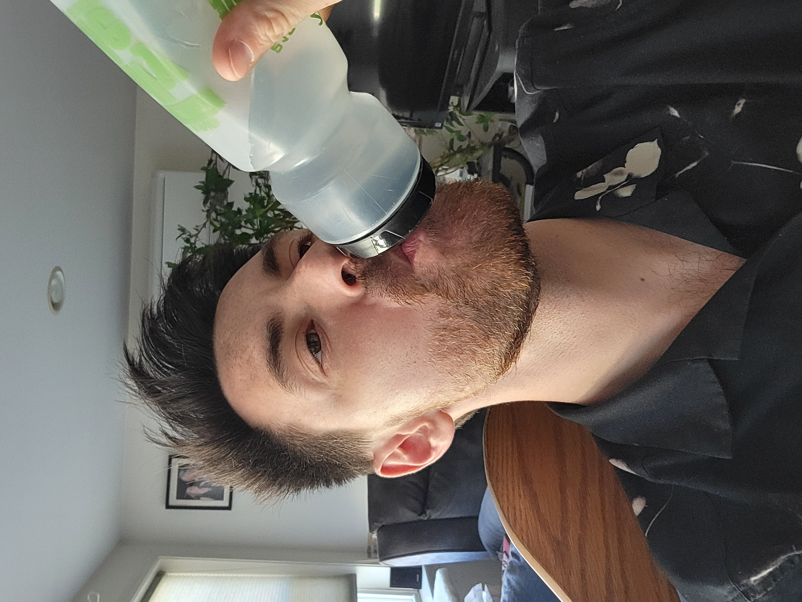
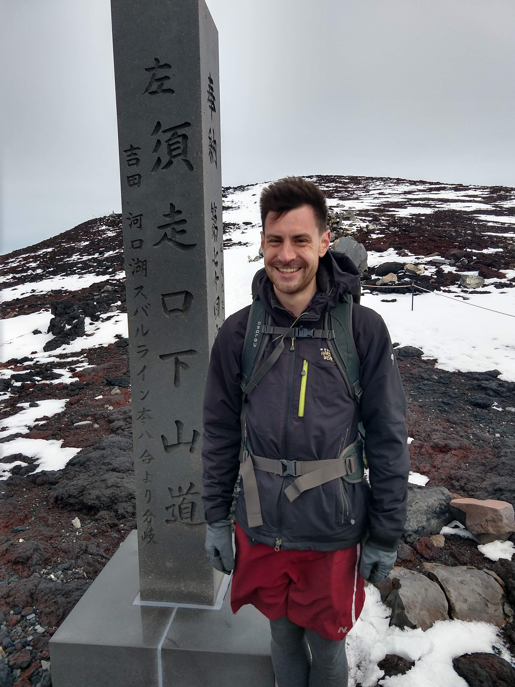

Jeff Schueler’s Abridged Biography
Jeff Schueler is an experimental particle physicist specializing in improving particle detector performance through novel machine learning techniques, with particular emphasis on real data training, rare event searches, and overlapping object reconstruction. He is currently a postdoctoral researcher at the University of New Mexico working on the MIGDAL experiment, where he developed a machine learning analysis strategy that contributed to the discovery of the Migdal effect. Early in this role, Jeff developed a real data-trained end-to-end YOLOv8-based analysis pipeline that automated the MIGDAL experiment's search for the Migdal effect. In the MARVEL experiment's 2026 Nature paper reporting the discovery of the Migdal effect, the author's explicitly credit Jeff's pipeline as the inspiration for the candidate selection algorithm used in the discovery.

